전기기능장 (2006-04-02 기출문제)
1과목: 임의구분
1. 여자기(Excitor)에 대한 설명으로 옳은 것은?
- 발전기의 속도를 일정하게 하는 것이다.
- 부하 변동을 방지하는 것이다.
- 직류 전류를 공급하는 것이다.
- 주파수를 조정하는 것이다.
(정답률: 82%)

2. 트라이액(TRIAC)에 대하여 바르게 설명한 것은?
- 단일방향 특성을 가진 소자이다.
- 정(+)의 게이트 전류만을 흐르게 하는 소자이다.
- 부(-)의 게이트 전류만을 흐르게 하는 소자이다.
- 쌍방향 특성을 가진 소자이다.
(정답률: 87%)
3. 공기중에 같은 전기량을 가진 2×10-5[C]의 두 전하가 2m 거리에 있을 때 그 사이에 작용하는 힘은 몇 N인가?
- 0.9
- 1.8
- 9
- 18
(정답률: 68%)
4. 학교, 사무실, 은행 등의 옥내배선 설계에서 간선의 굵기를 선정할 때, 등 및 소형 전기기계기구의 용량 합계가 10KVA를 넘는 것에 대한 수용률은 내선 규정에서 몇 %를 적용하도록 규정하고 있는가?
- 40
- 50
- 60
- 70
(정답률: 82%)
5. 분류기를 사용하여 전류를 측정하는 경우 전류계의 내부 저항이 0.12[Ω], 분류기의 저항이 0.04[Ω]이면 그 배율은?
- 4
- 5
- 6
- 7
(정답률: 79%)
6. 다이액(DIAC)에 대한 설명으로 틀린 것은?(오류 신고가 접수된 문제입니다. 반드시 정답과 해설을 확인하시기 바랍니다.)
- NPN 3층으로 되어 있다.
- 트리거 용도로 사용된다.
- 역저지 4극 다이리스터이다.
- 쌍방향 대칭적인 부성저항을 나타낸다.
(정답률: 51%)
7. 그림과 같은 회로의 기능은?
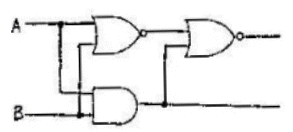
- 반일치 회로
- 감산기
- 반가산기
- 부호기
(정답률: 84%)
8. 100[V]용 30[W]의 전구와 60[W]의 전구가 있다. 이것을 직렬로 접속하여 100[V]의 전압을 인가하였을 때 두 전구의 상태는 어떠한가?
- 30[W]의 전구가 더 밝다.
- 60[W]의 전구가 더 밝다.
- 두 전구의 밝기가 모두 같다.
- 두 전구 모두 켜지지 않는다.
(정답률: 88%)
9. 피크 역전압(PIV)을 결정하는 것은?
- PNPN 다이오드에 걸리는 전압
- PNPN 다이오드 역바이어스 특성으로 애벌런치영역
- PN 접합에 걸리는 전압
- 유지전류
(정답률: 75%)
10. 공기 중에서 간격 1m의 평행 왕복도체에 길이 1m당 10-7N의 반발력이 작용한다면 이 도체에 흐르는 전류는 몇 [A]인가?
- √2
- 1/√2
- 2
- 1/2
(정답률: 65%)
11. 314mH의 자기 인덕턴스에 120[V], 60[Hz]의 교류 전압을 가하였을 때 흐르는 전류는 몇 [A]인가?
- 10
- 8
- 4
- 1
(정답률: 59%)
12. 주택배선에 금속관 또는 합성수지관공사를 할 때 전선을 1.6mm 또는 2.0mm의 단선으로 배선하려고 한다. 전선관의 접속함(정션 박스) 내에서 비닐 테이프를 사용치 않고 직접 전선 상호간을 접속하는데 가장 편리한 재료는?
- 터미널 캡
- 서비스 캡
- 와이어 커넥터
- 엔트런스 캡
(정답률: 90%)
13. 유도장해의 방지에서 사용전압이 60,000[V] 이하인 경우는 전화선로의 길이 12km마다 유도 전류가 몇 μA를 넘지 아니하도록 하여야 하는가?
- 1
- 2
- 3
- 4
(정답률: 66%)
14. 인버터제어라고도 불리우며, 유도전동기에 인가되는 전압과 주파수를 변환시켜 제어하는 방식은?
- VVVF 제어방식
- 궤환 제어방식
- 워드레오나드 제어방식
- 1단속도 제어방식
(정답률: 91%)
15. 어떤 R-L-C 병렬회로가 병렬공진 되었을 때 합성전류에 대한 설명으로 옳은 것은?
- 전류는 무한대가 된다.
- 전류는 최대가 된다.
- 전류는 흐르지 않는다.
- 전류는 최소가 된다.
(정답률: 73%)
16. 마이크로프로세서 주소버스(ADDRESS BUS)선의 수가 “20”인 경우, 접근할 수 있는 최대 메모리의 크기는 몇 byte인가?
- 256
- 512
- 1K
- 1M
(정답률: 56%)
17. 교류와 직류 양쪽 모두에 사용 가능한 전동기는?
- 단상 분권 정류자 전동기
- 단상 반발 전동기
- 세이딩 코일형 전동기
- 단상 직권 전동기
(정답률: 74%)
18. 발전기의 단락비나 동기임피던스를 산출 하는데 필요한 시험은?
- 무부하 포하시험과 3상 단락시험
- 정상, 영상 리액턴스의 측정시험
- 돌발 단락시험과 부하시험
- 단상 단락시험과 3상 단락시험
(정답률: 87%)
19. 무부하에서 자기여자로 전압을 확립하지 못하는 직류 발전기는?
- 직권 발전기
- 분권 발전기
- 복권 발전기
- 타여자발전기
(정답률: 66%)
20. 일반적으로 주기억장치에 사용되는 것은?
- 램(RAM)
- 플로피 디스크
- 하드디스크
- 자기 디스크
(정답률: 62%)
2과목: 임의구분
21. 그림과 같은 회로의 기능은?
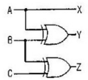
- 홀수 패리티 비트 발생기
- 크기 비교기
- 2진 코드의 그레이코드 변환기
- 디코더
(정답률: 82%)
22. 반도체 트리거 소자로서 자기 회복능력이 있는 것은?
- GTO
- SSS
- SCS
- SCR
(정답률: 75%)
23. 분기(Branch) 혹은 점프(Jump)명령은 결국 다음 중 어떤 레지스터(register)의 내용을 변경하고자 하는 것인가?
- Accumulator
- MAR(Memory Address Register)
- MBR(Memory Buffer Register)
- PC(Program-Counter)
(정답률: 42%)
24. 다음과 같은 S-R 플립플롭 회로는 어떤 회로 동작을 하는가?
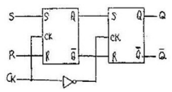
- 4진 카운터
- 시프트 레지스터
- 분주회로
- M/S 플립플롬
(정답률: 80%)
25. SCR의 설명이 옳은 것은?
- 게이트 전류로 애노드 전류를 제어할 수있다.
- 단락상태에서 전원 전압을 감소시켜 차단 상태로 할 수 있다.
- 게이트 전류를 차단하면 애노드 전류가 차단된다.
- 단락상태에서 애노드 전압을 0 또는 부(-)로 하면 차단 상태로 된다.
(정답률: 81%)
26. 논리회로의 출력함수가 뜻하는 논리 게이트의 명칭은?
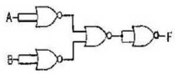
- AND
- OR
- NAND
- NOR
(정답률: 59%)
27. 단상전파 정류회로를 구성한 회로로 가장 알맞은 것은?
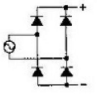
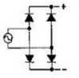
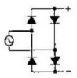
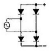
(정답률: 82%)
28. 입 출력장치에서 메모리로 데이터를 전송하는 방법 중 가장 빠른 방식은?
- DMA에 의한 전송
- 인터럽트에 의한 전송
- 프로그램에 의한 전송
- 시리얼에 의한 전송
(정답률: 50%)
29. 직류기의 주요 구성 요소라 할 수 있는 것은?
- 정류자, 계자, 브러시, 보상권선
- 계자, 브러시, 전기자, 보극
- 계자, 전기자, 정류자, 브러시
- 보극, 보상권선, 전기자, 계자
(정답률: 80%)
30. 전기자 권선을 단절권으로 하는 이유는?
- 고조파를 제거한다.
- 역률을 좋게 한다.
- 기전력의 크기를 높게 한다.
- 절연을 좋게 한다.
(정답률: 74%)
31. 간선의 굵기, 개폐기의 용량 및 과전류 보호기의 결정방법은 간선에 접속하는 전동기의 정격전류의 합계가 50A이하인 경우 정격전류 합계의 몇 배 이상으로 하는가?
- 1.1배
- 1.2배
- 1.25배
- 1.4배
(정답률: 74%)
32. MKS 단위계로 기자력의 단위는?
- AT
- Wb
- Gauss
- Maxwell
(정답률: 74%)
33. 변압기를 병렬운전 하고자 할 때 갖추어야 할 조건이 아닌 것은?
- 극성이 같을 것
- 변압비가 같을 것
- % 임피던스 강하가 같을 것
- 효율이 같을 것
(정답률: 70%)
34. 빛의 에너지를 전기에너지로 변환시키는 것은?
- 광전 다이오드
- 광전로 소자
- 광전 트랜지스터
- 태양전지
(정답률: 83%)
35. 직류 분권 전동기의 공급전압의 극성을 반대로 하였을 때 다음 중 옳은 것은?
- 회전 방향은 변하지 않는다.
- 회전 방향이 반대로 된다.
- 회전하지 않는다.
- 발전기로 된다.
(정답률: 82%)
36. 변압기의 임피던스 전압이란 어떤 전압을 말하는가?
- 부하시험에서 인가하는 정격전압
- 무부하 시험에서 인가하는 정격전압
- 절연내력시험에서 절연이 파괴되는 전압
- 정격전류가 흐를 때의 변압기 내의 전압강하 전압
(정답률: 64%)
37. 그림과 같이 대전된 에보나이트 막대를 박검전기의 금속판에 닿지 않도록 가깝게 가져 갔을 때 금박이 열렸다면 다음 중 옳은 것은? (단, A는 원판, B는 박, C는 에보나이트 막대이다.)
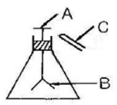
- A: 양전기, B: 양전기, C:음전기
- A: 음전기, B: 음전기, C:음전기
- A: 양전기, B: 음전기, C:음전기
- A: 양전기, B: 양전기, C:양전기
(정답률: 84%)
38. 평형 보호층 배선의 시설장소로 적합한 곳은?
- 호텔
- 병원
- 학교
- 연구소
(정답률: 70%)
39. 분기 회로의 시설 중 저압 옥내간선과 분기점에서 전선의 길이가 몇 m 이하인 곳에 개폐기 및 과전류 차단기를 시설하여야 하는가?
- 3
- 4
- 5
- 6
(정답률: 80%)
40. 자기 인덕턴스 10mH의 코일에 10[A]의 전류를 흘렀을 때 코일에 저축되는 에너지는 몇 J인가?
- 0.5
- 5
- 50
- 500
(정답률: 64%)
3과목: 임의구분
41. ACSR은 다음 중 어느 것에 해당 되는가?
- 연동연선
- 중공연선
- 알루미늄선
- 강심 알루미늄연선
(정답률: 86%)
42. 직경 2.6[mm] 단선 19가닥을 사용한 연선의 규격은?
- 60[mm2]
- 80[mm2]
- 100[mm2]
- 125[mm2]
(정답률: 67%)
43. H[AT/m]의 자계 내에 놓인 m[Wb]의 자극에 작용하는 힘은 몇 N 인가?
- H/m
- m/H
- mH
- m2H
(정답률: 67%)
44. 유도 전동기의 1차 접속을 △에서 Y결선으로 바꾸면 기동시의 1차 전류는?
- 1/3로 감소한다.
- 1/√3로 감소한다.
- 배로 증가한다.
- √3배로 증가한다.
(정답률: 77%)
45. 사인파의 파형률은 얼마인가?
- 0.577
- 1.11
- 1.414
- 1.732
(정답률: 63%)
46. 200[W] 이하의 백열전구는 보통 베이스의 소켓을 사용하는데 그 중 점멸장치가 있는 소켓은 어느 것인가?
- 키이 소켓
- 키이리스 소켓
- 누름단추 소켓
- 풀 소켓
(정답률: 73%)
47. 전지의 기전력이나 열전대의 기전력을 가장 정확하게 측정하는 데는 어떤 측정기를 사용하는가?
- 전류력계형 계기
- 캠벨 브리지
- 켈빈 더블 브리지
- 직류 전위차계
(정답률: 76%)
48. 관등회로에 대한 설명으로 옳은 것은?
- 방전등용 안정기로부터 방전관까지의 전로
- 전선 지지점의 거리가 2m 이하인 전로
- 전선 상호간의 간격이 0.8m 이상인 전로
- 금속관공사로서 콘크리트에 매설하는 깊이가 0.2m이상인 전로
(정답률: 78%)
49. 변압기 여자 전류에 가장 많이 포함된 고조파는?
- 제2고조파
- 제3고조파
- 제4고조파
- 제5고조파
(정답률: 70%)
50. 주어진 진리표는 무엇을 나타내는가?
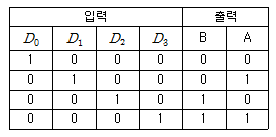
- 디코더
- 인코더
- 멀티플렉서
- 디멀티플렉서
(정답률: 67%)
51. 전원과 부하가 다같이 △결선된 3상 평형 회로가 있다. 전원 전압이 200[V], 부하 임피던스가 6+j8[Ω]인 경우 선전류를 몇 [A]인가?
- 10
- 20
- 10√2
- 20√3
(정답률: 72%)
52. 3상 발전기의 전기자 권선에 Y결선을 채용하는 이유로 볼 수 없는 것은?
- 중성점을 이용할 수 있다.
- 같은 상전압이면 △결선보다 높은 선간 전압을 얻을 수 있다.
- 같은 상전압이면 △결선보다 상절연이 쉽다.
- 발전기 단자에서 높은 출력을 얻을 수 있다.
(정답률: 77%)
53. 3상 변압기의 병렬운전이 불가능한 결선은?
- △-△ 와 Y-Y
- Y-△와 Y-△
- △-Y와 △-Y
- △-Y 와 Y-Y
(정답률: 86%)
54. 절연체로 폴리에틸린, 보호층으로 연질의 비닐, 외장으로 반 경질비닐을 사용한 것으로 600[V] 이하의 저압 분기회로에 사용하는 케이블은?
- CV 케이블
- CB-EV 케이블
- MI 케이블
- TFR-CV 케이블
(정답률: 59%)
55. 제품 공정분석표용 공정도시기호 중 정체 공정(Delay) 기호는 어느 것인가?
- O
- →
- D
- □
(정답률: 77%)
56. 계수값 규준형 1회 샘플링 검사에 대한 설명 중 가장 거리가 먼 내용은?
- 검사에 제출된 로트에 관한 사전의 정보는 샘플링 검사를 적용하는데 직접적으로 필요로 하지 않는다.
- 생상자측과 구매자측이 요구하는 품질보호를 동시에 만족시키도록 샘플링 검사방식을 선정한다.
- 파괴 검사의 경우와 같이 전수검사가 불가능한 때에는 가용할 수 없다.
- 1회만의 거래시에도 사용할 수 있다.
(정답률: 70%)
57. 다음 표를 이용하여 비용 구매(cost slope)를 구하면 얼마인가?
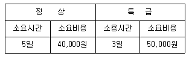
- 3,000원/일
- 4,000원/일
- 5,000원/일
- 6,000원/일
(정답률: 80%)
58. 문제가 되는 결과와 이에 대응하는 원인과의 관계를 알기 쉽게 도표로 나타낸 것은?
- 산포도
- 파레토도
- 히스토그램
- 특성요인도
(정답률: 70%)
59. 표준시간을 내경법으로 구하는 수식은?
- 표준시간 = 정미시간 + 여유시간
- 표준시간 = 정미시간 ×(1+여유율)
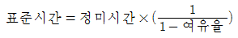
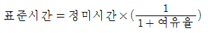
(정답률: 81%)
60. 다음 중 부하와 능력의 조정을 도모하는 것은?
- 진도관리
- 절차계획
- 공수계획
- 현품관리
(정답률: 74%)